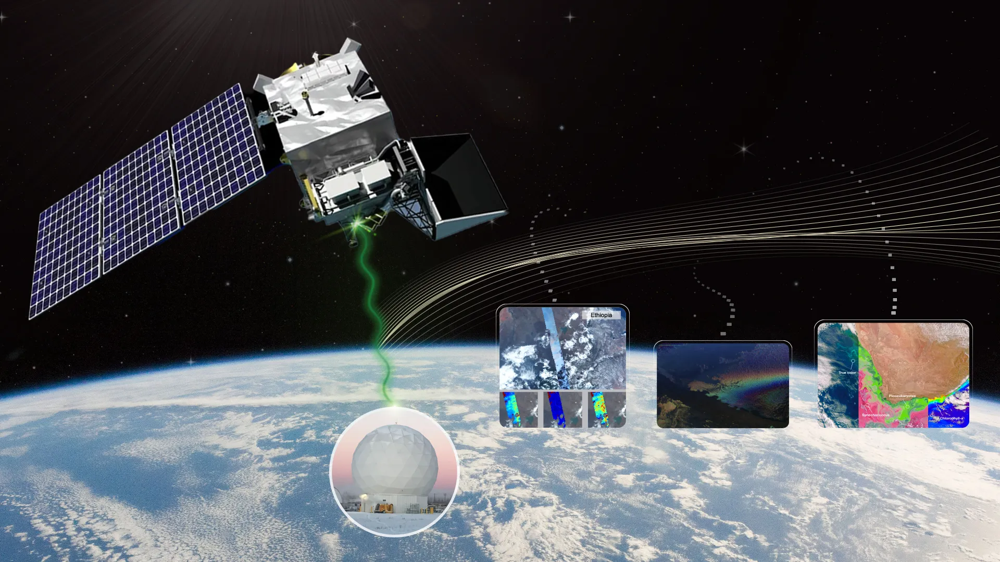
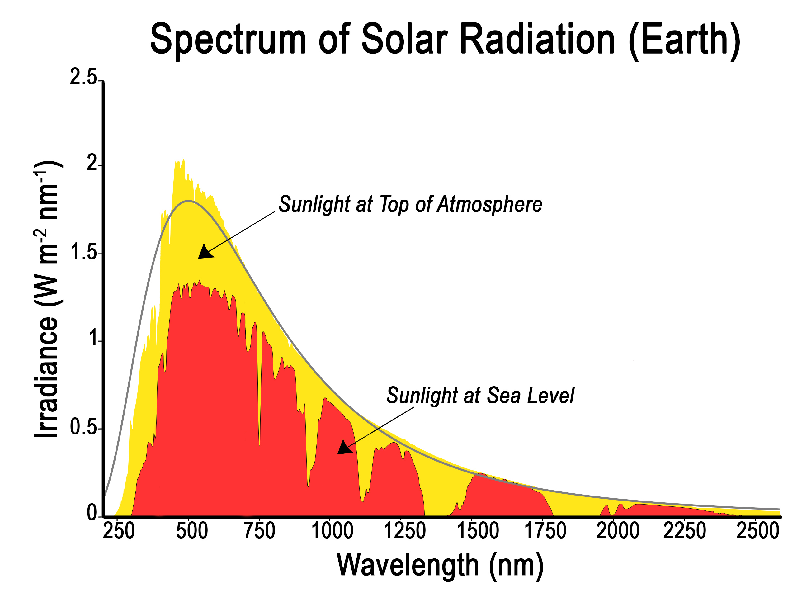

How Does PACE Collect Information?
The PACE mission utilizes advanced instruments to observe and measure various elements of the Earth’s atmosphere and ocean. These instruments provide essential data to help scientists understand our planet’s ecosystems and the impacts of climate change.

Light Attenuation Through the Atmosphere:
The electromagnetic spectrum contains various types of radiation, but not all reach Earth's surface. As light passes through the atmosphere, it gets altered by a process called attenuation.

What's That Stuff in the Atmosphere?:
The atmosphere contains gases, aerosols, and clouds that interact with light. These interactions alter the way light behaves and affect the data collected by PACE.
Highlighted Gases: Nitrogen, Oxygen, Argon, Greenhouse Gases (Carbon Dioxide, Methane, Nitrous Oxide, Ozone).
Aerosols of Interest: Sea Spray, Smoke, Dust.
Measuring What's in the Atmosphere:
PACE’s instruments decode the complex signals of light into atmospheric components. The Ocean Color Instrument (OCI), SPEXone, and HARP2 work together to capture this data.
OCI: Measures detailed color spectra from the ocean and atmosphere.
SPEXone: Focuses on aerosol characterization.
HARP2: Provides detailed cloud measurements.
Travel Through Atmospheric Windows:
Solar radiation interacts with atmospheric gases, and certain bands of radiation pass more easily through these "windows." This is critical for measuring both incoming and outgoing light on Earth.
Fun Fact:
The colors of the sky at sunrise and sunset are caused by the scattering of light as it travels through the atmosphere. Red skies at sunset often signal good weather, while red skies at sunrise can indicate an approaching storm.